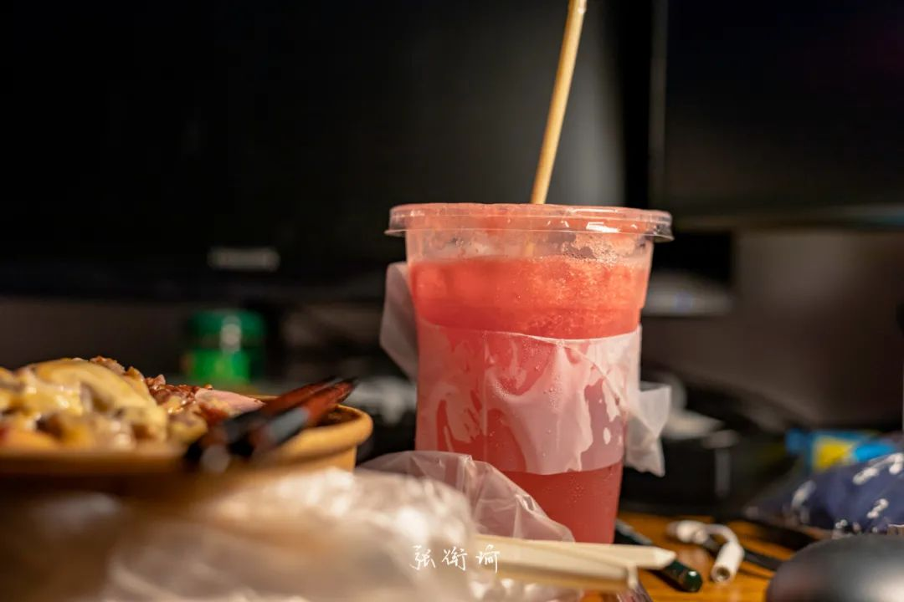

值得表扬的是今天去游泳了，而且晚餐也是吃的减肥餐。说减肥餐有失偏颇，毕竟这看起来像是一个素菜窗口。之前我去工学院素菜窗口的时候指着肉问那个打饭的人：这是什么？打饭的人说是肉。进而迷惑。后来才知道，缘来所谓的素菜窗口的确如他们所宣称的那样：没有一只动物在他们的烹饪当中受到伤害。大抵是这些肉也是素肉，是用各种奇奇怪怪的豆制品或者其他什么乱七八糟的东西糅合在一起做成。讲道理是有些自欺欺人。明明说自己的素食主义者，买的菜里边又有各种肉的代食食品。越来越离谱。而且，主要还很难吃。明明人类花了几百万年的时间，可能不止，总之很久的时间进化到了现在的生物水平，为什么要返祖过去再用素食来为难自己的肠胃？我现在有点后悔跟两粒酱说打算减肥二十斤的事了（虽然也是不可能完成的任务）讲道理我并不需要觉得这么离谱的。因为在长沙有一道小食，名字叫做捆鸡。捆鸡里边又分荤/肉捆鸡和素捆鸡，其中肉捆鸡就是用各种乱七八糟的内脏捆绑成火腿的样子，而素捆鸡就纯粹是用调料出味的豆制品了。不过，知道归知道，吃归吃。我没事才不会选这种奇怪的食物来吃，毕竟凉菜热卤里边多的是可以选：海带结、毛豆、猪耳朵（等等好像变荤了）所以今天我在标题[饭是打包的，但生活不是]，素菜再怎么样，也还是没有一碗扎实透亮的红烧肉看起来舒服啊。把食堂里打包带走的一次性餐具全部扔掉，然后换上我自己的聪明餐具。又在大杯的西瓜汁里面放了一支我自己的麦秸梗吸管。刚刚晚上花了大概半个小时岔开着注意力把这一碗吃完，现在一边写着这篇推文就一边在脑海里想着那种锃光瓦亮油麻灵光的红烧肉。
啊倒是也可以退而求其次（虽然这样对杭帮菜的朋友们不太友善）如果是一小碗方方正正Q弹有劲的东坡肉，那感觉应该也会很不错子。